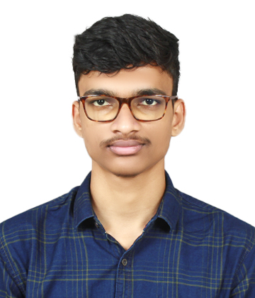

- Name : Atharv Rajan Mulik
- Education :
- Completed 10th boards in 2020 with a successive 93.40% from SHFHS, Nirawade.
- Completed 12th boards in 2022 with a successive 82.50% from RPD, Sawantwadi.
- Currently pursuing BE computer engineering from NMIET,Talegaon.
- Experience : Currently a fresher looking for opportunites in different fields.
- Skills :
- A beginner in web development, currently working on front-end development and looking forward to be a full stack web developer.
- Currently working on DSA in C++, from fundamentals to advanced.
- Certifications :
- Pursuing web-development course from udemy.
- Pursuing C++ course from GeeksForGeeks.
- Pursuing JAVA programming certification from Swayam NPTEL.
Hobbies
Contact-Details